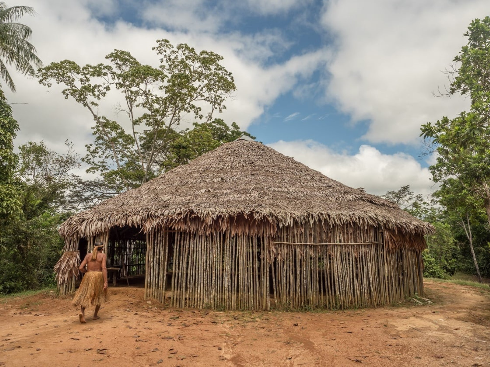
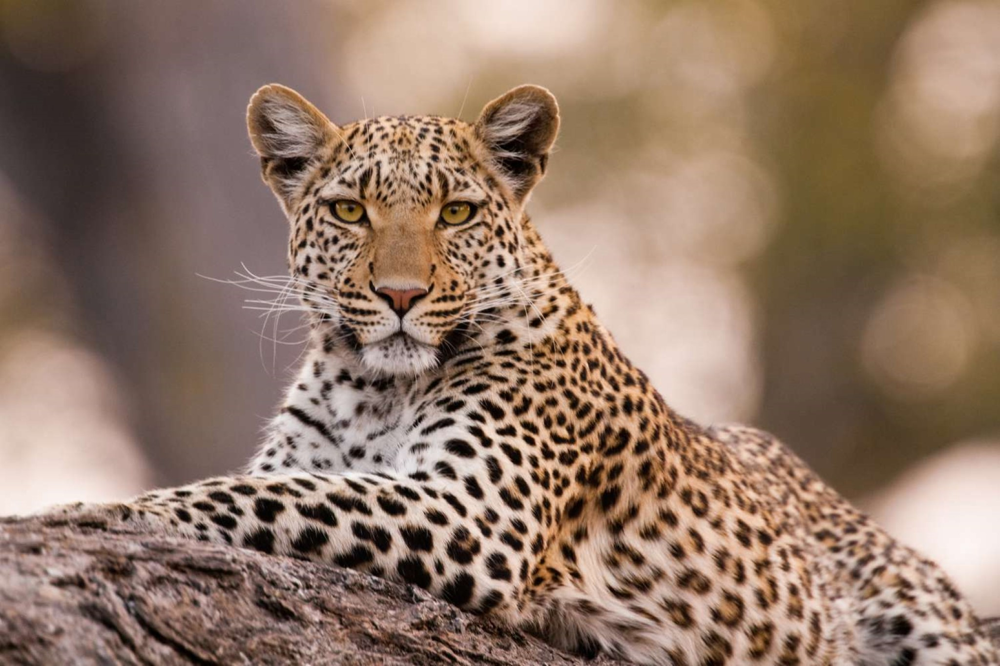
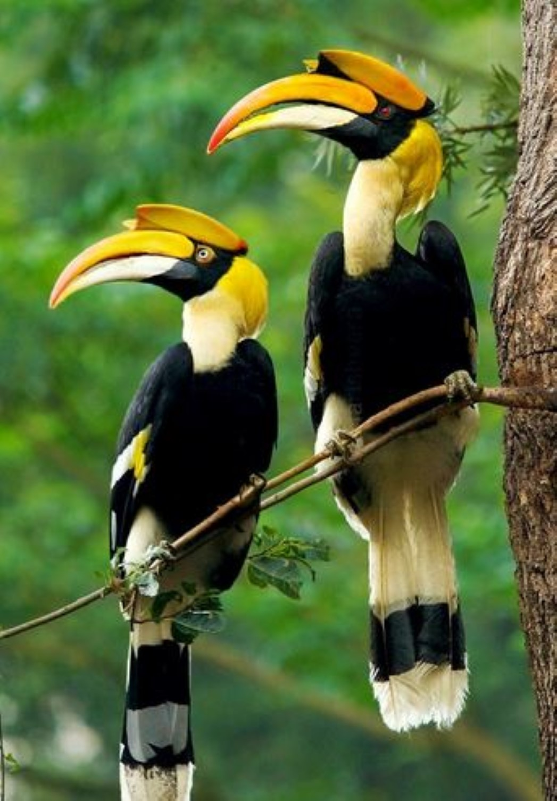

Wildlife and Human Ecology
In this biodiversity hotspot, understanding plant and animal ecology, human impacts on wildlife species, and how people use and relate to natural resources is all critical and these motivate our research and conservation efforts.
WILDLIFE IN RAINFOREST FRAGMENTS

The animal life of the Western Ghats rainforests is rich and unique, with hundreds of vertebrate and thousands of invertebrate species, including a large fraction found only in the region. Even when continuous forests are reduced to fragments, they act as refuges and animal corridors and need to be conserved. Research has shown that fragments continue to play an important role as refuges for many species, besides acting as animal corridors. Even small fragments have conservation value, as persistence of many species is related to availability of suitable habitat or resources, rather than just the size of remnant. This suggests the need to also target fragments for protection and ecological restoration in order to expand conservation into wider landscapes.
Many animals of the Western Ghats, such as the endemic primates lion-tailed macaque and Nilgiri langur, are mainly found in the tropical rainforest habitat. Besides occurring in continuous forests within protected areas, many species in the Western Ghats have significant populations in rainforest fragments outside protected areas, such as within tea and coffee plantations.
PEOPLE OF THE RAINFOREST

There are many tribal communities living in the rainforests of western ghats hills. Understanding the lifestyles and livelihoods of the Kadar, Muthuvar, and Malai Malasars who live in Anamalai hills, their strategies, the current lifestyle patterns, their dependency on forest and resource requirements.
It seeks to understand communities that live within or in close proximity to tropical rainforests in the sanctuary, with the following areas of concern: (1) the nature, patterns, and variability of resource-use and extraction from within the rainforests, (2) the levels of community dependence on and linkages maintained with forests and markets, (3) demographic change and its repercussions on development objectives of human settlements and management of the sanctuary, and (4) aspects of ethnography, social identity, and cultural change.
Forestry and plantation-related developments over the years has caused the loss of tropical rainforests and lands that were used by tribal communities. These once self-sustaining communities have become dependent on outside resources inducing changes in lifestyles. Key areas of development that people envisioned were better education, access to employment, involvement in development schemes such as housing, food security, and water supply.
THE SECRET LIFE OF LEOPARDS

Leopards are amongst the most elusive of large mammals, and yet, one of the key conflict-prone species in India. This study, across a 27,000 sq km landscape in Karnataka strives to understand leopard distribution across a habitat modification gradient, and their interactions with people in human-dominated landscapes. Leopards are known for their remarkable adaptability and it is no surprise, therefore, that their range is not limited to protected areas. Yet, in Karnataka, there is little reliable information on leopard distribution, especially outside protected areas and other natural habitats.In addition to the distribution of leopards, also estimating leopard densities within and outside protected areas through camera trapping surveys. Some preliminary data has revealed healthy leopard populations outside protected areas.
Leopards tend to be solitary animals and rarely interact with each other, except to mate or raise cubs. Leopards are territorial and male leopards will fight if their territories overlap. They mark their territory with urine and claw marks on the bark of trees. The research titled ‘Estimating population sizes of leopard cats in the Western Ghats using camera surveys’ provides the country’s first large-scale population estimates for the species. Researchers Arjun Srivathsa, Ravishankar Parameshwaran, Sushma Sharma and Dr. Ullas Karanth analysed camera-trap data from over 2075 sq km area covering Bhadra, BiligiriRangaswamy Temple (BRT), Bandipur and Nagarahole Tiger Reserves in Karnataka.Utilizing advanced spatial capture-recapture tecnhiques, the study found that Bhadra had the highest population density with over 10 leopard cats per 100 sq km area, followed by BRT with over four individuals per 100 sq km.
HORNBILL HOTSPOTS

Hornbills have captured the imagination, and the hearts, of populations across their habitats globally. Their large down-curved beak, size, eyelashes, unique calls, and the strong family bond they share make them an interesting study. They are often considered the indicator of good ecological health, and play a significant role in maintaining the balance in the environment they inhabit. The hornbills are omnivorous. They depend on a wide variety of fruits found in their habitat and vary their dietary habitat in different seasons based on food availability and diversity.
Hornbills are threatened worldwide by hunting and habitat loss. These birds require vast areas of primary forest to thrive, but due to human intervention, the forest cover has declined drastically over the past decades. One of the largest threats to Great hornbills in India is concerning hunting for casque and feathers in the decoration of traditional headgear of many tribes. Elsewhere they are also hunted for bushmeat and supposed medicinal value of their fat. Hornbills are identified as keystone species and also an indicator of ecosystem health. A fall in the hornbill population will reduce the dispersal of tree seeds, which will in the long run reduce the forest cover of the area. Awareness programs need to be conducted regularly for students, local community and in these areas and bring them into the frontline to protect hornbills and thereby securing the future for them and their next generations. In addition to nesting trees, conservation of existing fruits is also important in maintaining a good population of hornbills.